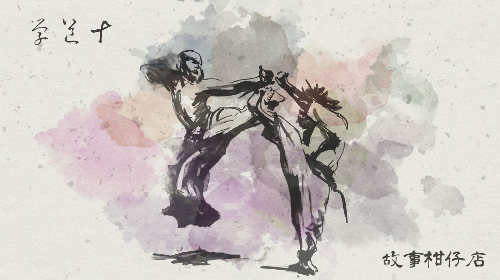
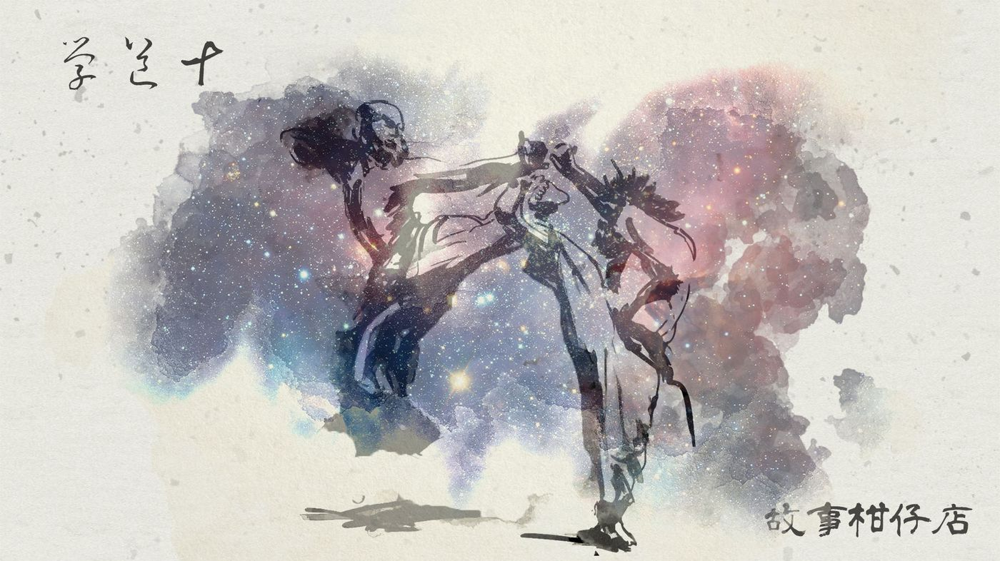

玄墨行者．學道（十）

這一天，玄墨七者全到齊了，聚集在內堂裡，各自閒聊著，輕鬆中不時閃過一絲緊張。
這是玄墨一門的規矩。傳人成年禮當天，所有人都必須在場，見證傳人能否通過試煉，正式繼承師父衣缽。
「師兄，你們說，這拾兒能不能通過？」最滑溜的瑤光問大家，「要不來開個賭盤下注？」
「老七，這是何等大事，你也太不正經了。」天樞眼球一轉，一瞪，拾起話頭轉了彎，趁機訓話，「現在只有我和老三、老五有傳人，其他人也該認真找找了，否則玄墨一門豈不是要滅了？」
「大師兄，傳人不好找，您又不是不知道。天底下哪來這麼多孤兒棄子讓我們撿哪？」瑤光不怕被訓，笑嘻嘻，穿著破牛仔褲的長腿晃呀晃。
開陽像是說相聲似的接了下去：「就算收了個孩子進來，含辛茹苦養到十八，通不過成年禮，也只是白搭。」
此話一出，全場氣氛突然凝結。開陽立刻意識到自己說錯話，乖乖住嘴低下頭，卻沒躲過玉衡拋來的責備眼光。所有人都假裝沒聽到似的，理衣撥髮乾咳，就期望這一秒趕緊過去。
唯有天璇，雙手抱胸，扭過頭去。
這的確是個不該提起的話題。
其實天璇本也栽了個傳人。那孩子天性安分，卻跟了性急的天璇，做什麼事都畏畏縮縮。體術練不成、書背不好、機關術學得零零落落，就連吃飯也不敢飽。好不容易熬到成年禮那天，說什麼都不肯進廂房見蒙叟，哭著說他根本不想收妖。
能怎麼辦，難道把他架進去不成？天璇搖搖頭，那孩子的成年禮是脫門下山，從此音訊杳然。
無論怎麼說，自己栽的樹長不高、活不久，總不是件光彩的事，大家很有默契不再提起，誰知今日開陽的無心之言，戳中了天璇痛處。
「喲！今天主角來了！」瑤光嚷道。他聲音中的情緒，不光是歡迎，還參雜「得救了」的鬆了口氣。
瀑布朝兩旁拉開，水門後出現一個颯爽少年，柔軟捲髮像海浪一般披在肩上，換上嶄新的藏青恤衫和合身機能性黑褲，一雙長腿繃得緊緊的，胸前有丘，肩頭似嶺。
穿慣寬鬆棉衫的拾兒，對整套合身衣褲有點彆扭，但再怎麼樣也是六、七師叔送的禮物，況且一穿上，虹月這傢伙竟一邊臉紅一邊說好看，當然得穿。
天璣迎上前去，拍拍他健壯手臂說：「拾兒，看你的了。」
除了天璣以外的六者，站成個六角形，拾兒併攏雙腿，雙手抱拳向眾師伯師叔行了個禮，站到正中央。天樞打頭陣，率先打出一掌，拾兒稍一歪頭巧妙閃過，伸臂、轉腕、蹲膝，輕輕撥開天樞長袍，像背後長眼似的，腿腳往後一踢，擋住了天權的攻擊。
在外圍的天璣，看著拾兒身段如同一尾魚，行雲流水游過洶洶來勢。不知為何，所有人的拳腳都像入了深水，慢了、柔了、失準了，雖說過武陣只是形式，但拾兒簡直大氣不喘就輕鬆過了這關。
拾兒又行了個禮，朗聲說：「多謝師伯師叔留情！」
天樞說：「看不出來身手利索，看來是平常上課太無聊了。」他一張薄唇嘴角上揚，卻毫無牽動臉部其他肌肉，說笑也不像。
六者退到一旁，拾兒舉香跪在壁畫前，天璣拿手爐盛瀑水，灑天灑地灑徒兒，鄭重說道：「玄墨三子玄天璣傳人拾兒入門已滿十八年，今日欲過成年禮，為師在此贈與羅盤一副、出借醉妖弦一把，助他正式踏入玄墨一門。」
說完，便從懷中掏出一個掌心大小的羅盤，以及一把僅手指長的弦琴，拾兒雙手高舉過頭，畢恭畢敬收下。
見到此幕，玉衡竟感動得有點想哭。她扶了扶髮髻的步搖，哎，當年撿到虹月時她還小得跟個棉花糖似的，誰想得到兩年後，她也將接過這簪步搖呢？
當下容不得她太傷感，拾兒已邁開步子，準備走進蒙叟廂房。
怎麼自己想哭，見別人的眼裡也是淚？玉衡以為自己眼花，有一瞬間，天璣眼中濕潤晶瑩如山澗。
－－－－－
#新連載依舊兩天一篇每晚準時六點半喔
#請人客多多指教
#記得去各大書店買我們的書故事柑仔店哩

